本书作者：测试开发刚哥，文章版权归个人所有，未经授权请勿转载。
JMeter 断言用来对服务器的响应数据进行验证，其中的响应断言基本能完成大多数的验证工作，但是 JMeter 还是提供了适用于多个不同场景的断言元件，一共 16 个，如下图所示：
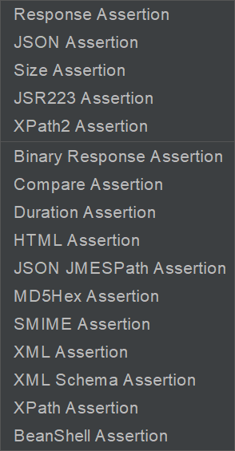
Response Assertion
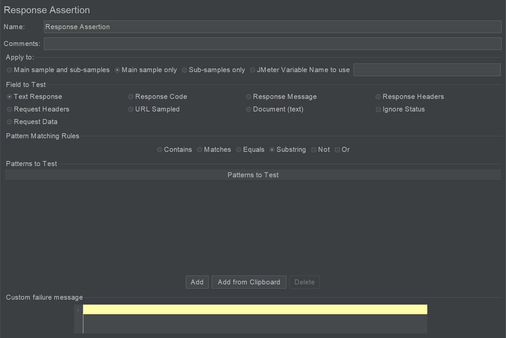
最最最常用的断言，足够满足工作需要。
Apply to：断言应用范围。
子取样器可能是 JMeter 手动设置的，可能是重定向，可能是嵌入资源（images、iframe 等）。
Field to Test：哪部分响应域参与断言。
Ignore Status：多个响应断言，如果当前断言失败了，勾选此选项可以忽略此响应结果，继续下一个断言。
Patterns to Test：
- Contains：实际响应包括预期匹配内容，支持正则表达式。
- Matchs：实际响应完全匹配预期匹配内容，大小写不敏感，支持正则表达式。
- Equals：实际响应完全等于预期匹配内容，大小写敏感，只支持字符串，不支持正则表达式。
- Substring：实际响应包括预期匹配内容，大小写敏感，只支持字符串，不支持正则表达式。
Not：对测试模式进行否定。
Or：将多个测试模式以逻辑“或”组合起来。
Add：添加需要匹配的字符串或者正则表达式。
Custom failure message：自定义失败信息。
多模式断言，Add 可以添加多个断言模式，假设有模式 p1，p2，p3：
- 默认 And：p1 and p2 and p3
- 只选 Not：(not p1) and (not p2) and (not p3)
- 只选 Or：p1 or p2 or p3
- 同时选 Not 和 Or：(not p1) or (not p2) or (not p3)
JSON Assertion
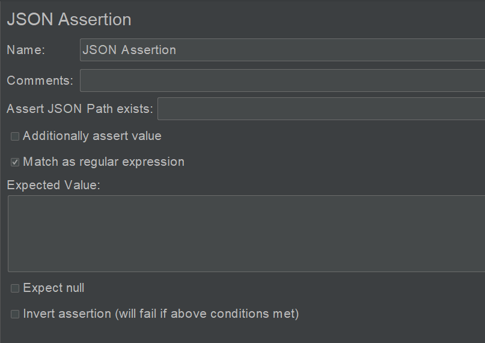
JSONPath 是一个 JSON 查询语言，可以用来快速查找节点，语法参考：
https://github.com/alibaba/fastjson/wiki/JSONPath
Assert JSON Path exists：JSONPath 表达式。
Additionally assert value：普通匹配。
Match as regular expression：正则匹配。
Expected Value：预期值。
Expect null：预期为 null。
Invert assertion（will fail if above conditions met）：反转断言，如果上面的条件满足就断言失败。
Size Assertion
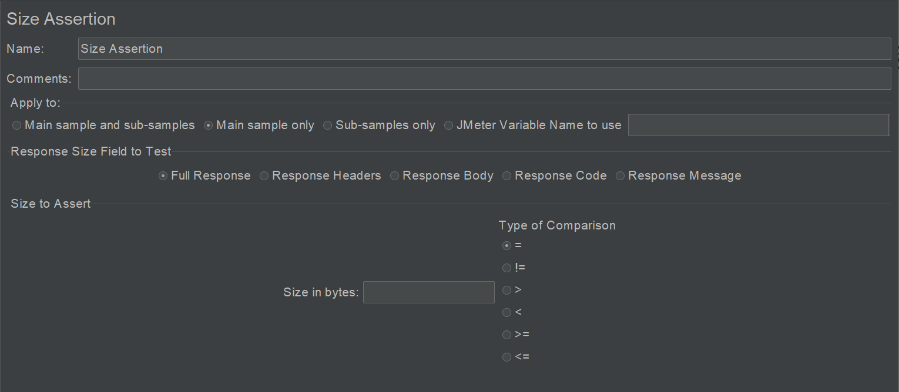
验证响应数据 Size 大小。
Apply to：断言应用范围。
Response Size Field to Test：哪部分响应域参与断言。
Size to Assert：断言时 Size 的阀值设置。
JSR223 Assertion
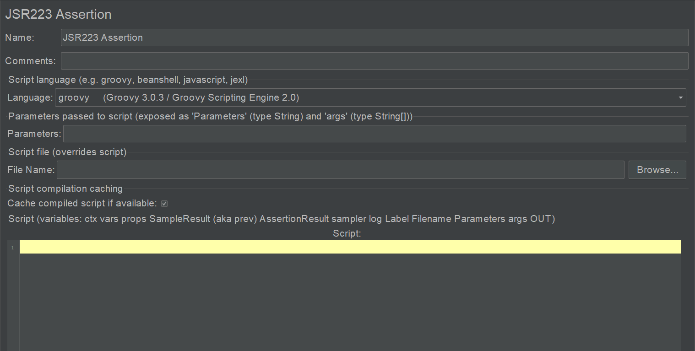
支持其他脚本语言如 JavaScript。
XPath2 Assertion
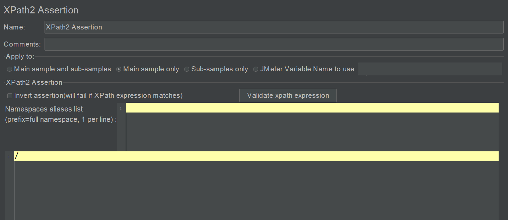
2.0 版本的 XPath 断言，可以验证 WebServices 协议接口响应的 XML 格式数据。
Binary Response Assertion
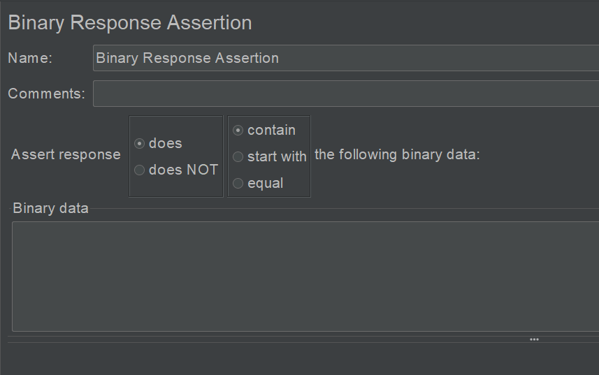
验证二进制响应数据。
Compare Assertion
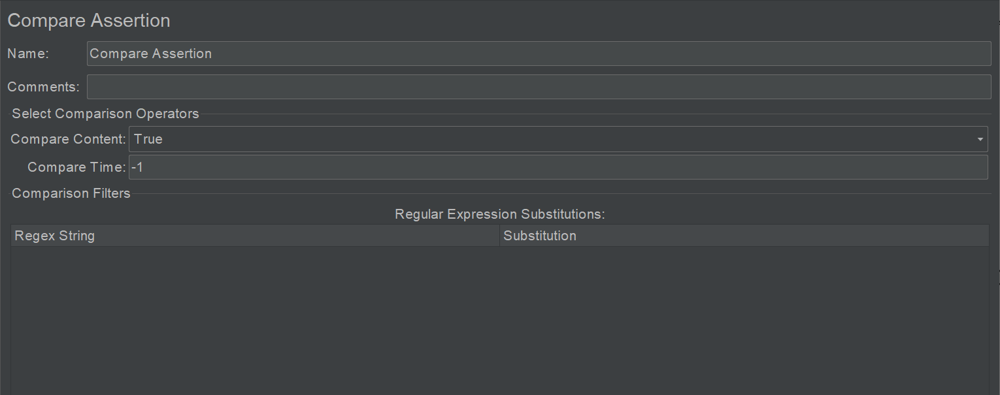
因为会消耗较多资源，一般不建议使用，仅仅用来调试。
Compare Assertion 进行设置，需要配合 Comparision Assertion Visualizer 进行断言结果显示。
Duration Assertion
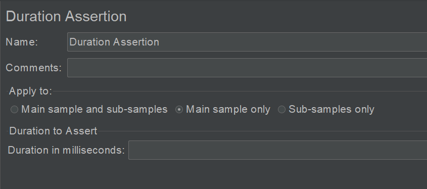
验证 Sampler 运行测试消耗的时间，比如断言持续 10s，如果实际耗时 30 秒，就会断言失败。
HTML Assertion
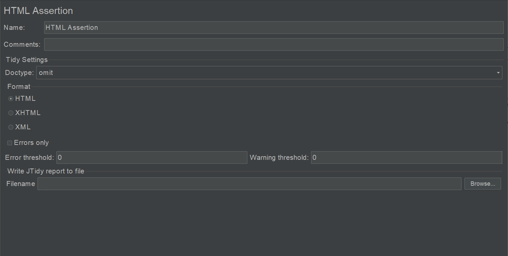
用的比较少。
JTidy 是 HTML Tidy 的 Java 实现版本，提供了 HTML 的语法检查器，可以用来解析 HTML 代码，可以用来清除格式不好和不对的 HTML，类似于一个处理 HTML 文件的 DOM 解析器。
JSON JMESPath Assertion
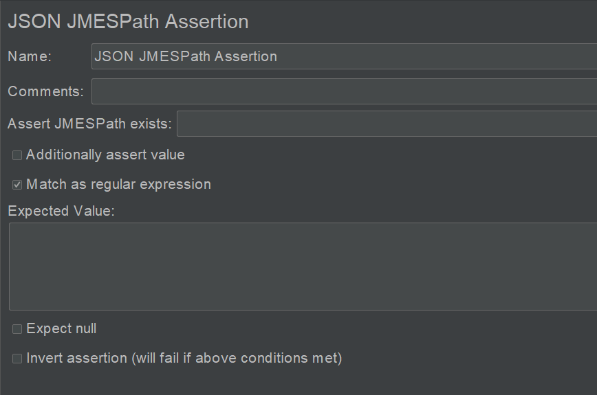
跟 JSONPath 一样，是另外一个 JSON 查询语言，语法参考：
MD5Hex Assertion
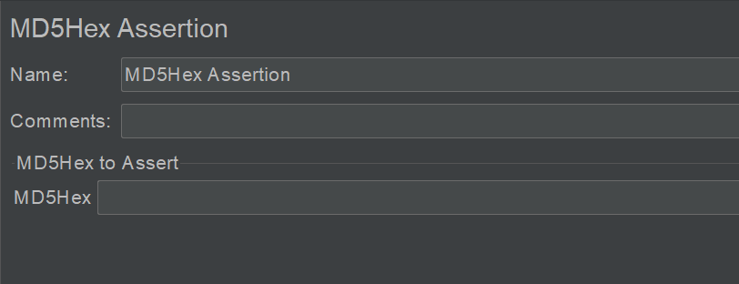
对返回的 MD5 结果进行断言。
MD5Hex：直接填入 MD5 值。
SMIME Assertion
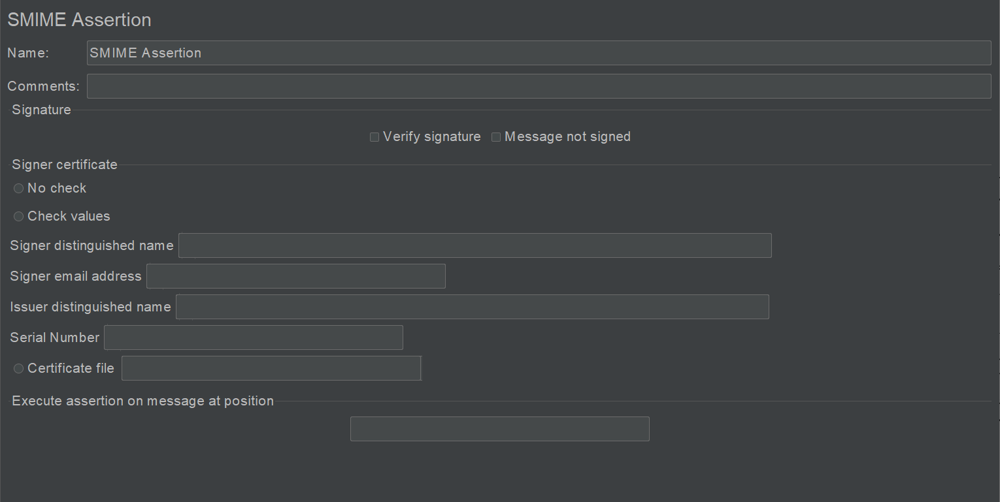
不常用。
对加密和签名的邮件进行断言。
XML Assertion
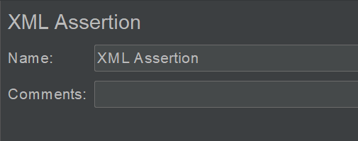
不常用。
验证响应数据是正确的 XML 格式。
XML Schema Assertion
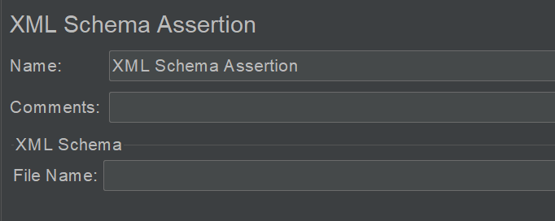
不常用。
XML Schema 的作用是定义一份 XML 文档的合法模板。
XPath Assertion
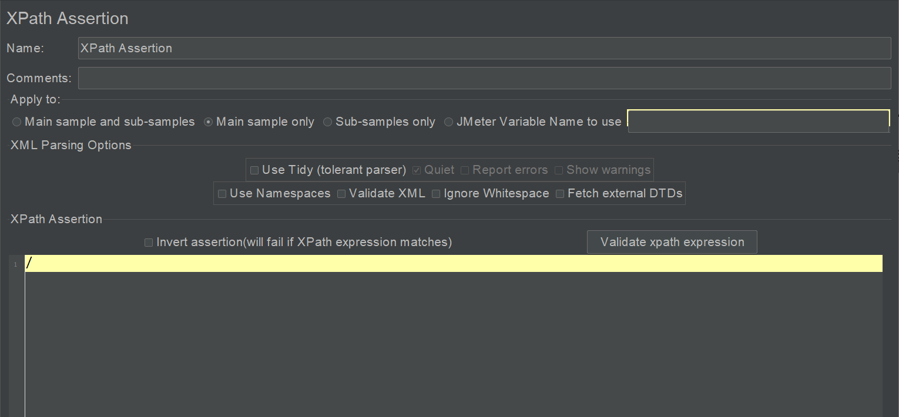
可以验证 WebServices 协议接口响应的 XML 格式数据。
BeanShell Assertion
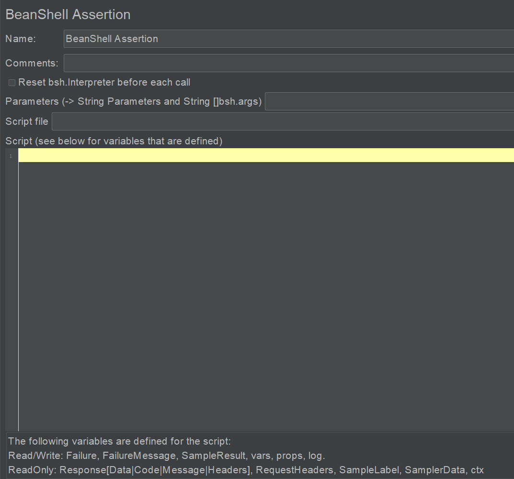
BeanShell 作为脚本语言能够方便地调用 Java 类，在断言元件中，可以访问 JMeter 的诸多属性，具体有：
- log，写日志。
- SampleResult，获取响应数据、响应码等。
- Response，获取响应数据。
- Failure，设置断言成功与否，Boolean 类型。
- FailureMessage，设置失败信息。
- ResponseData，响应数据。
- ResponseCode，响应码。
- ResponseMessage，响应信息。
- ResponseHeaders，响应头信息。
- RequestHeaders，请求头信息。
- SampleLabel，取样器 Label 信息。
- SamplerData，发送给服务器的数据。
- Ctx（JMeterContext），JMeter 上下文信息，获取线程数、线程号等信息。
- Vars（JMeterVariables），获取 JMeter 中定义的变量，或者设置变量。
- Props（JMeterProperties），获取 JMeter 中的属性，或者设置属性。
示例：
SampleResult.getRequestHeaders()
SampleResult.setSuccessful(false)
SampleResult.getResponseDataAsString()
SampleResult.getResponseCode()
SampleResult.getResponseMessage()
小结
本文对 JMeter 所有断言元件进行了介绍，其中的响应断言已经足够使用了，对于 RESTful 接口来说，JSON 格式响应数据可以使用 JSON Assertion 和 JSON JMESPath Assertion，其他元件则用的比较少。另外 BeanShell Assertion 在编写基于 JMeter 的测试平台时可能会用到。
参考资料：
《全栈性能测试修炼宝典 JMeter 实战》